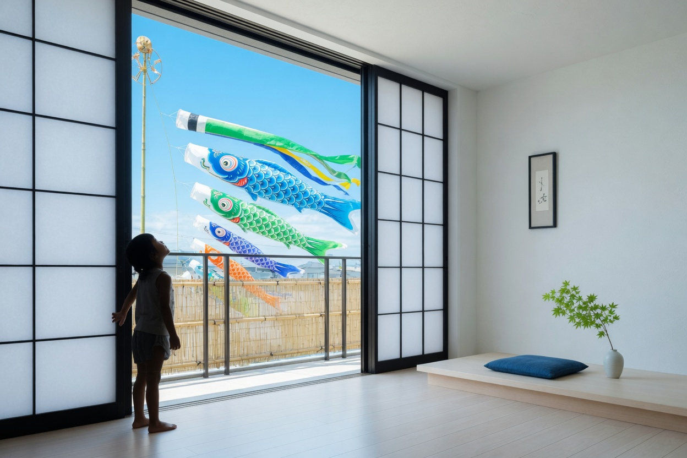

KODORI brings the spirit of Kodomo no Hi into modern family life — precise, beautiful tools for the rituals you want to keep.

Design your own streamer set. Choose colors, symbols, and printed keepsakes that will last decades.
Mark first steps, first words, first lost tooth, first day of school — with the same clean graphic system.
Every ritual produces beautiful archival prints and a private digital journal that grows with your family.
Choose a ritual. Select palette, message, and materials. Add photos and private notes over the years. Print once, keep forever.
The same vivid accents that appear on your screen appear on the archival paper we send you.
Pick colors from the KODORI palette. Write a short wish. Choose paper stock and finishes.
Hang the streamers. Photograph the day. Add private reflections and milestones to the family journal.
Receive the archival print set. Everything lives together in one clean timeline you can return to for years.
Start your first ritual today. 14 days free. Cancel anytime.